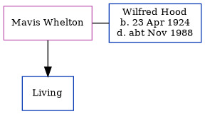

Kathleen Muriel Hood 1928 - c1984
[ Home ] | [ Calendar ] | [ Surnames Index ] | [ Census Index ] | [ Family History ]The youngest of 3 children of John Hood and Ada Collins, Kathleen Hood, the third cousin once-removed on the father's side of Nigel Horne, was born in Elham, Kent, England on Oct 8, 19281,2,3. On Sep 29, 1939, she was living at Elvington Cottage, Newington, Kent, England1.
She died c. Feb 1984 in Shepway, Kent, England3.
Parents
- John H was born on Mar 3, 1896
- Ada Mary was born on Jul 10, 1895
Citations
- 1939 Register - Findmypast (was the daughter of the head of the household)
- England & Wales births 1837-2006 - Findmypast
- England & Wales deaths 1837-2007 - Findmypast
Media
England & Wales births 1837-2006 - BMD/B/1928/4/AZ/000557/141
1939 Register - TNA/R39/1824/1824E/010/01
England & Wales deaths 1837-2007 - BMD/D/1984/3/74395699
Family Tree
Generated by ged2site. Last updated on Jun 11, 2024